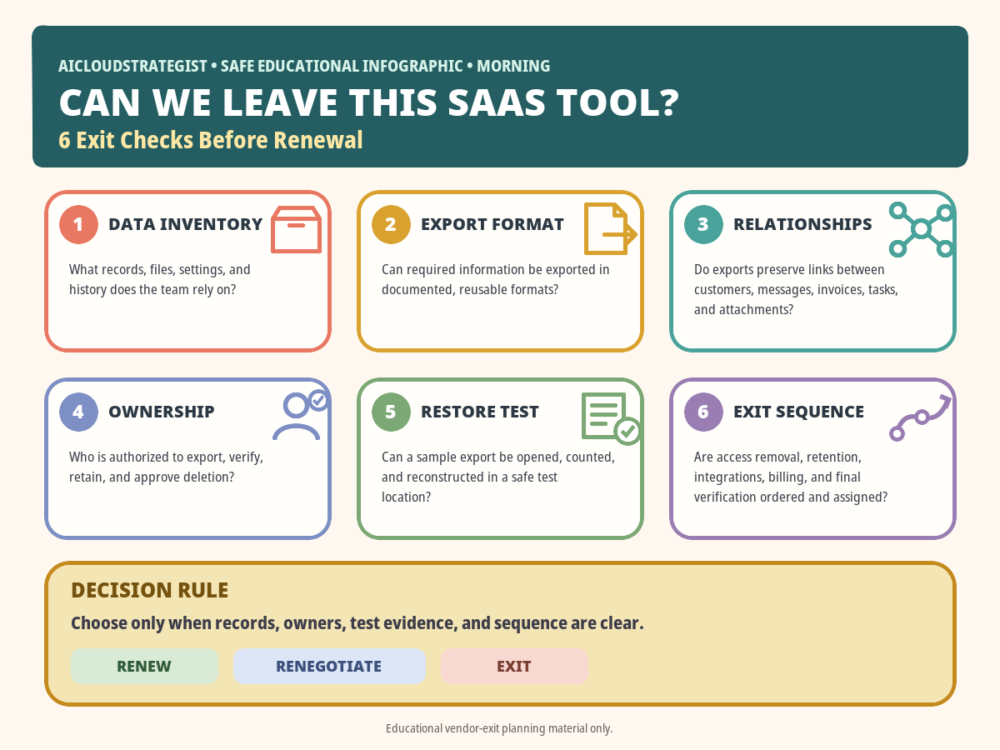

Data Inventory
What records, files, settings, and history does the team rely on?
AICloudStrategist safe educational publication · Morning · 2026-11-24
A practical educational checklist for small-business owners testing data portability, ownership, restore evidence, and exit sequencing before a SaaS renewal decision.

What records, files, settings, and history does the team rely on?
Can required information be exported in documented, reusable formats?
Do exports preserve links between customers, messages, invoices, tasks, and attachments?
Who is authorized to export, verify, retain, and approve deletion?
Can a sample export be opened, counted, and reconstructed in a safe test location?
Are access removal, retention, integrations, billing, and final verification ordered and assigned?
Renew, renegotiate, or exit only after the required records, owners, test evidence, and sequence are clear.
Download the exit-readiness worksheet (CSV) · Read the text version · Machine-readable answer card
Proof boundary: Educational vendor-exit planning material only — not legal, compliance, privacy, security, procurement, accounting, contract, or production migration advice. No client results, certifications, rankings, savings, or guarantees are claimed.